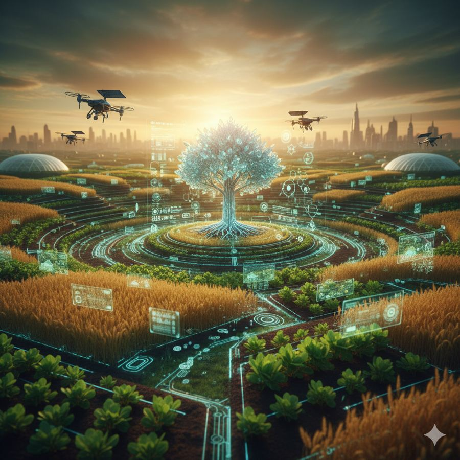
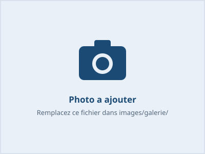

Nous rassemblons, formons et accompagnons la jeunesse vers des projets utiles à la région : agriculture, technologie et entrepreneuriat.
L'Organisation des Jeunes Scientifiques et Innovateurs de Podor regroupe des jeunes passionnés de sciences, de technologie et d'innovation. Apolitique, laïque et à but non lucratif, elle met en valeur le potentiel scientifique de la jeunesse sénégalaise et encourage l'esprit d'entreprise et de collaboration.
Apprendre aux jeunes à utiliser Word, Excel et PowerPoint.
Transformer une idée en prototype et en modèle économique, avec des programmes de sensibilisation.

Concevoir des projets agricoles pour faire de Podor une ville autonome et indépendante.
Six directions animent l'organisation. Touchez une direction pour voir ses membres.
Un espace de divertissement éducatif pour la population, qui valorise les talents des jeunes scientifiques, artistes et entrepreneurs.
Table ronde et ateliers sur l'entrepreneuriat agricole pour les jeunes.
stimuler l'intérêt, la curiosité et la créativité des élèves pour les disciplines scientifiques .
Revivez nos olympiades, fêtes et activités en images. Ouvrez une catégorie pour voir les photos et vidéos.

Extraits des statuts de l'OJSIP. Siège social à Podor, durée illimitée.
Objet. Promouvoir la science et l'innovation, organiser des activités scientifiques, culturelles, sportives et sociales, contribuer au développement économique local (agriculture, entrepreneuriat), valoriser la culture locale et renforcer les capacités des jeunes par des formations, conférences et ateliers.
Membres. Membres fondateurs, membres actifs et membres d'honneur ou bienfaiteurs. Toute personne de plus de 15 ans peut adhérer, après acceptation du bureau exécutif.
Organes. L'assemblée générale (au moins une fois par an), le bureau exécutif élu par l'assemblée, et des commissions spécialisées : science, culture, communication, finance.
Ressources. Subventions de l'État, des collectivités, des ONG et partenaires, dons et legs, produits des activités (kermesses, festivals, formations).
Modification et dissolution. Modification des statuts à la majorité des deux tiers des membres présents. En cas de dissolution, les biens vont à une association aux buts similaires.
Écrivez-nous : votre message s'ouvre dans votre application e-mail, prêt à être envoyé.